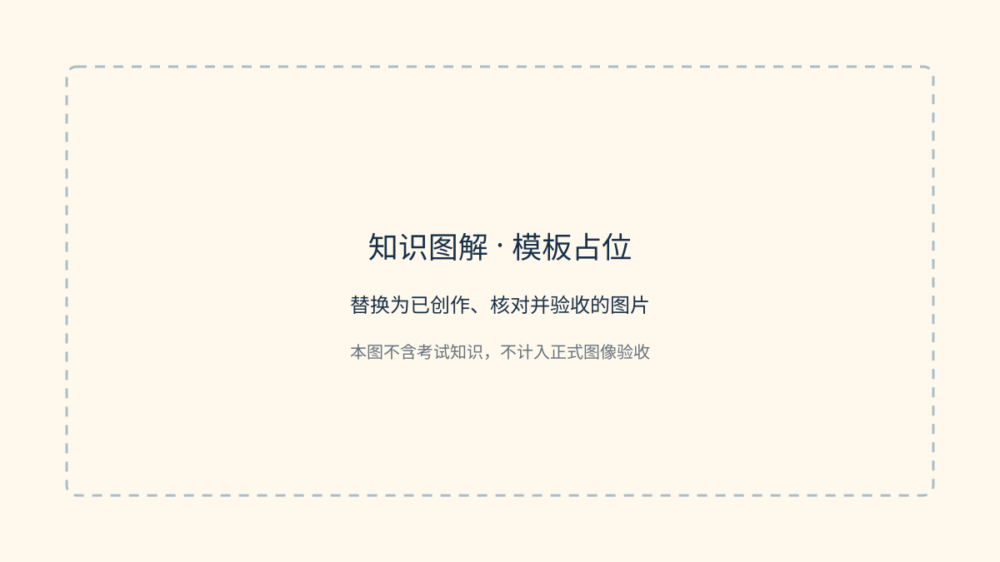

〔总述占位〕先给出整体关系，用一个具体情境串起本节各概念。不要把制作过程或提示词写入读者正文。
先辨认各部分怎样联系
〔正文占位〕交代各角色、对象或层级的分工，再解释它们为何需要合作。段落应能连续阅读。


沿同一情境展开过程
〔正文占位〕承接上一段的结果，说明下一步发生什么、为什么发生。正式内容可在这里加入第二张图或已渲染的 Mermaid SVG；不要显示未渲染源码。
〔边界占位〕澄清一个真实易混点，写明成立条件与例外。
把细节放回完整关系
〔归拢占位〕回到开头的情境，串起本节判断依据。结尾不新增整组尚未解释的名词。